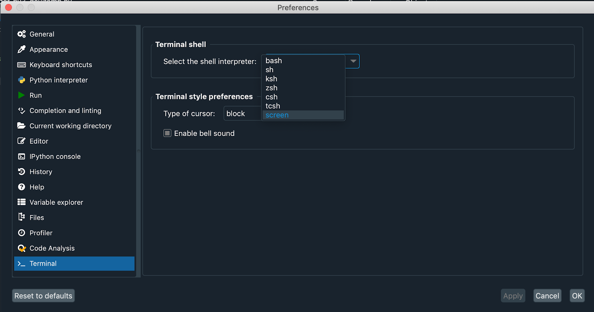
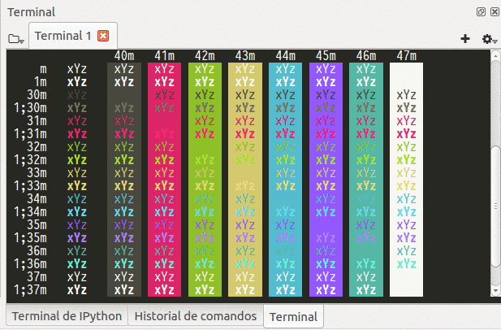
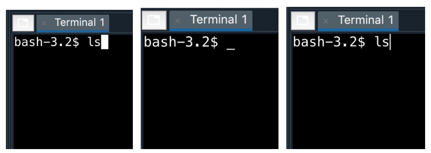
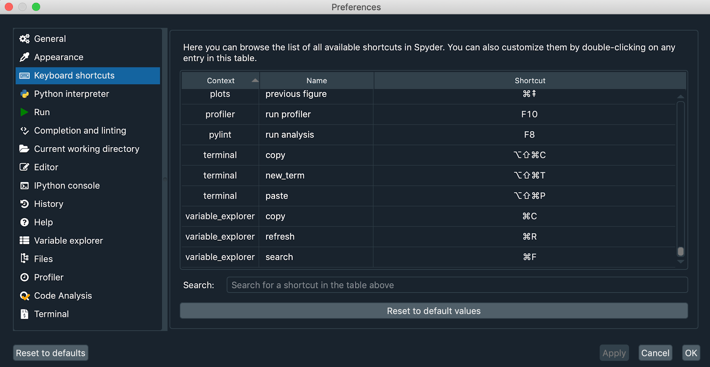

Creating the ultimate terminal experience in Spyder 4 with Spyder-Terminal
The Spyder-Terminal project is revitalized! The new 0.3.0 version adds numerous features that improves the user experience, and enhances compatibility with the latest Spyder 4 release, in part thanks to the improvements made in the xterm.js project.
Upgrade to ES6/JSX syntax
First, we were able to update all the old JavaScript files to use ES6/JSX syntax and the tests for the client terminal. This change simplified the code base and maintenance and allows us to easily extend the project to new functionalities that the xterm.js API offers. In order to compile this code and run it inside Spyder, we migrated our deployment to Webpack.
Multiple shells per operating system
In the new release, you now have the ability to configure which shell to use in the terminal. On Linux and UNIX systems, bash, sh, ksh, zsh, csh, pwsh, tcsh, screen, tmux, dash and rbash are supported, while cmd and powershell are the available options on Windows. To select your preferred command processor, simply choose it from the menu in the Terminal pane of Spyder's preferences and restart the IDE.

This is a great feature because it allows the user to determine their shell interpreter among the ones that are installed in their systems. In this way, Spyder-Terminal can be configured with any of the existing shells as long as it is available on their machine.
Theme support and new UI options
Another big change in the new version is built-in support for all Spyder's light and dark themes. When you change your Spyder theme or display options, the Terminal automatically adapt its UI, colors and fonts accordingly.

Building on the look and feel of the plugin, we also added configurable options for the terminal sounds and the cursor style. In this way, you can choose whether the terminal uses a bell sound and can select from one of three cursors.

Shortcut configuration
Lastly, the shortcuts on the terminal are configurable within the keyboard shortcuts in Spyder 4. The terminal's shortcuts for Copy, Paste, Clean and New terminal are now no longer hardcoded.

We're excited for you to try out Spyder-Terminal 0.3.0 and experiment with the new features available; we'd like to thank NumFOCUS and Quansight for providing the funding and support that made all this work possible. Check back soon for more Spyder updates, and until then, happy coding!